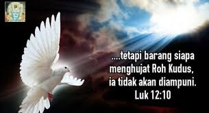

Banyak timbul dalam pemikiran kalangan Muslim tentang: mengapa Yesus berdoa? ini menjadi tidak asing lagi
dalam batin kekristenan untuk menjawab pertanyaan ini. Marilah kita membahas ini dengan logika paling
sederhana
karena sebenarnya menjawab ini telah menjadi hal yang paling gampang untuk dicerna dan dimengerti setelah
belajar
Tritunggal. Namun, mereka tidak percaya. oleh sebab itu....

July, 29th, 2024
Apakah Rohkudus berasal dari Allah itu sendiri?
Rohkudus berarti Roh yang suci. Rohkudus sendiri dapat berarti bahwa itu merupakan Roh Allah sebab Allah
itu sendiri adalah Roh.
Roh ini, yang berasal dari Bapa, memberikan kepada kita sepenuhnya. Ia, yang Mahahidup, menyertai kita
selalu. Namun, mengapa harus Rohkudus
dan apakah ia benar berasal dari Allah?